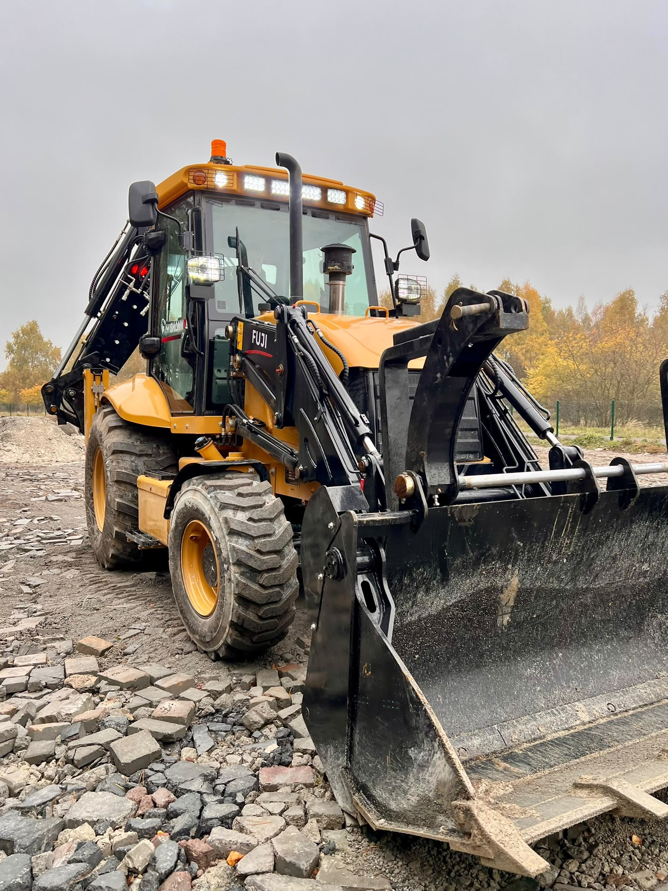
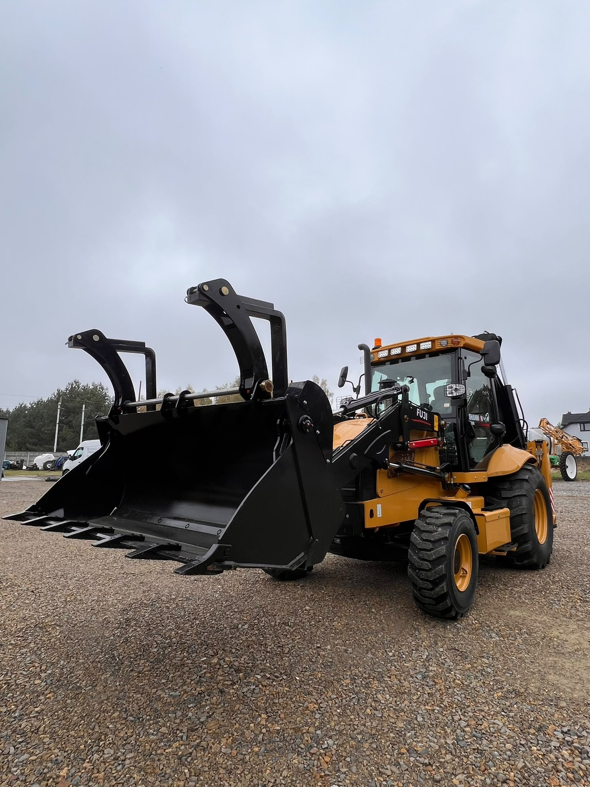
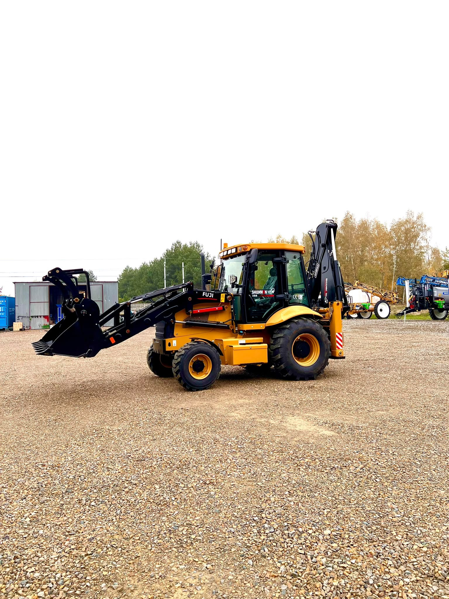
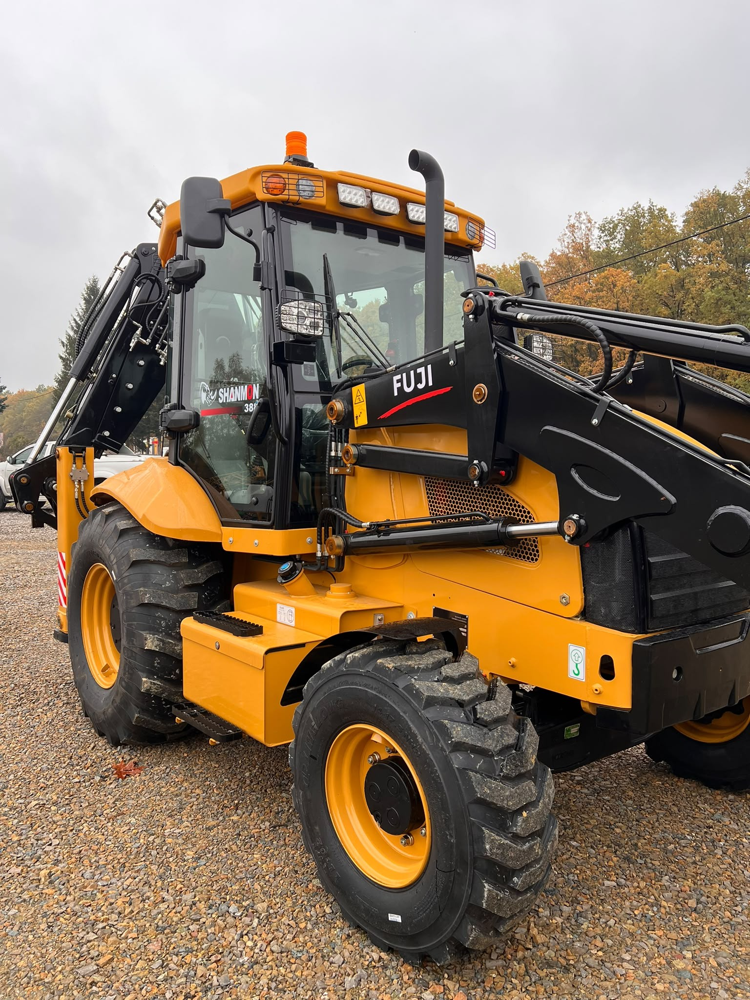
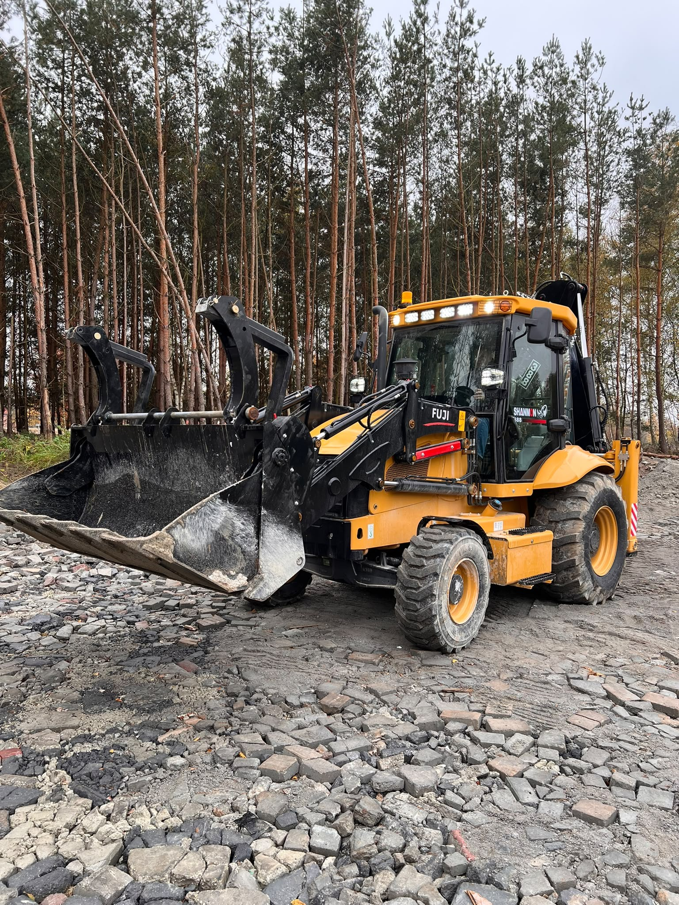
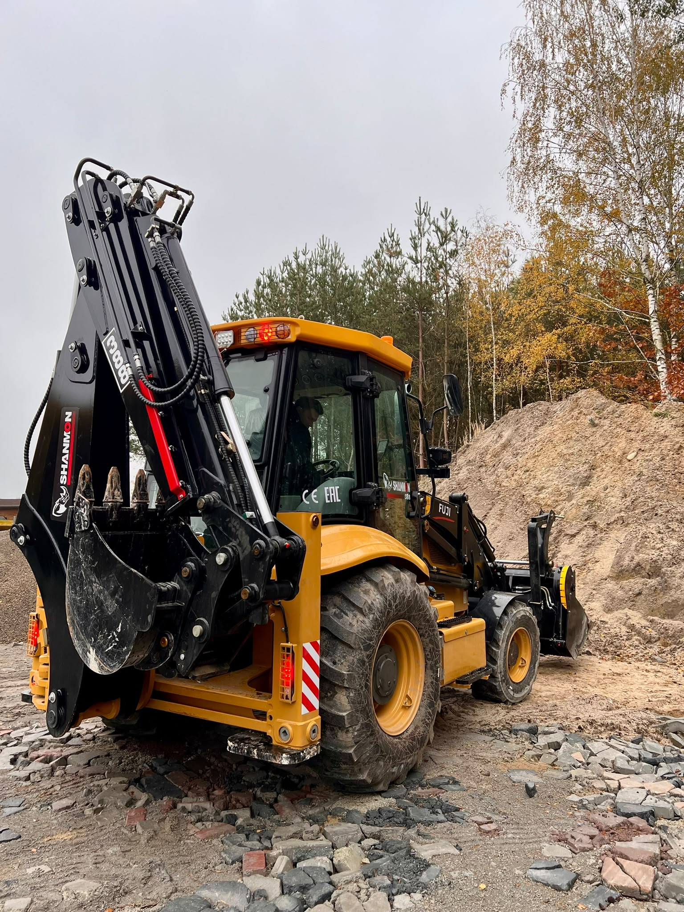

| Shanmon Fuji 388 – szczegóły maszyny | |
|---|---|
| Marka / model | Shanmon Fuji 388 (Yuchai) |
| Stan | Fabrycznie nowa, pierwszy właściciel, bezwypadkowa |
| Rok produkcji | 2026 (lipiec) |
| Motogodziny | 5 mth |
| Silnik | Yuchai, 74 kW (ok. 100 KM), Stage V |
| Napęd | 4x4, przełączany na 2WD |
| Masa robocza | 8 200 kg |
| Ramię koparkowe | teleskopowe, głębokość kopania do 5,5 m (4,1 m bez wysuwu) |
| Łyżka tylna | 550 mm (w komplecie) |
| Łyżka przednia | 6w1, hydraulicznie dzielona, szer. 2 200 mm, ok. 1,0 m³ |
| Udźwig ładowarki | 2 500 kg |
| Wysokość wyładunku | do 3 200 mm |
| Szybkozłącza | 2 (przód i tył) |
| Kabina | ROPS/FOPS, klimatyzacja, radio |
| Bezpieczeństwo | kamera cofania, alarm cofania, oświetlenie LED |
| Rozruch zimą | podgrzewanie rozruchowe |
| Gwarancja | 12 mies. – silnik, skrzynia biegów, most |
| Lokalizacja | Rzeszów – oględziny i jazda próbna po umówieniu |
Dane z oferty producenta i sprzedawcy; parametry mogą ulec zmianie bez powiadomienia.
Łyżki kopiące 30/40/60 cm, łyżka skarpowa, młot hydrauliczny, zagęszczarka, świder.
Tak – fabrycznie nowa koparko-ładowarka z lipca 2026 r., pierwszy właściciel, dostępna od ręki w Rzeszowie. Oględziny i jazda próbna po umówieniu.
Producent daje 12 miesięcy gwarancji na silnik, skrzynię biegów i most napędowy. Dostępna jest całodobowa infolinia serwisowa i płatny serwis z dojazdem do maszyny w całej Polsce.
Tak. Pomagamy w formalnościach: leasing operacyjny i finansowy dla firm oraz kredyt dla firm i osób prywatnych. Zadzwoń lub wyślij zapytanie – przygotujemy propozycję finansowania.
Tak, pomagamy zorganizować transport na wskazany plac budowy. Koszt wyceniamy indywidualnie – podaj lokalizację w zapytaniu.
Cena to 250 000 zł netto (307 500 zł brutto). Możliwość odliczenia VAT dla firm.
Tak, na zamówienie: modele 377, 388, 388-II, 388T, 388H, 398H oraz ładowarka WZ30-25. Dostępność i terminy podajemy po zapytaniu.
Zadzwoń: 791 589 997 lub napisz: biuro@fudali.com.pl. Zostaw dane w formularzu – oddzwonimy z ofertą i propozycją finansowania.